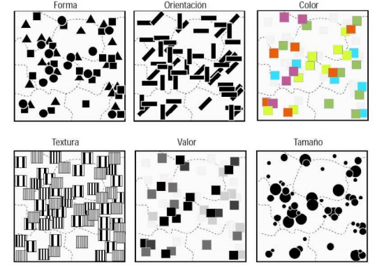
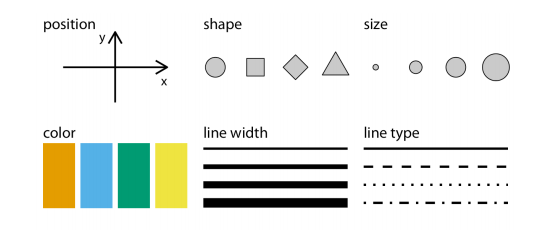
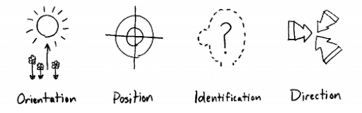
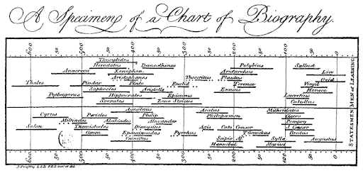
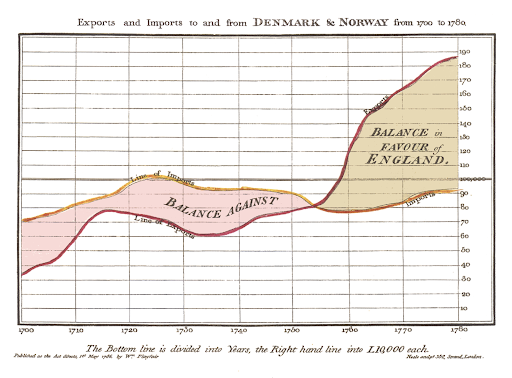
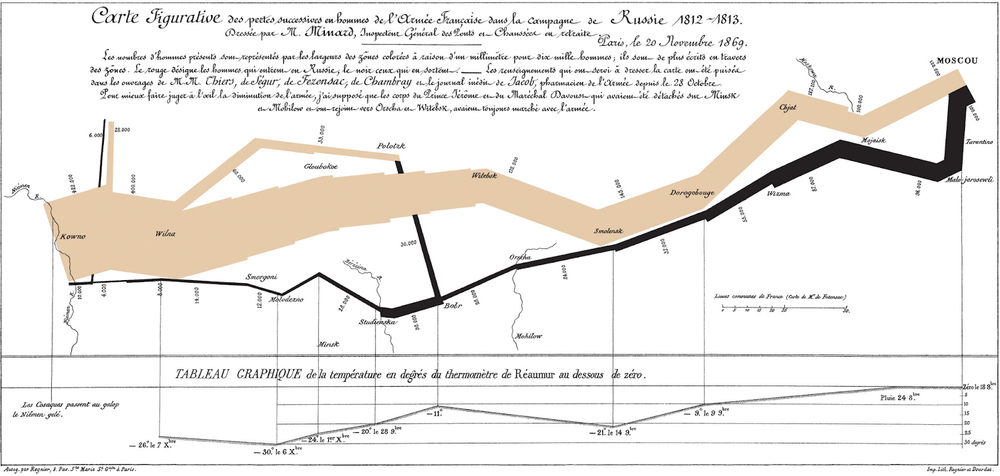
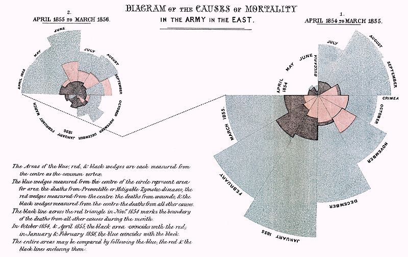
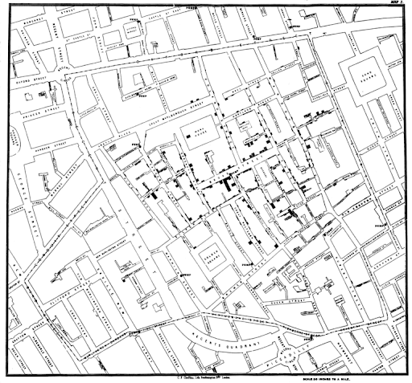
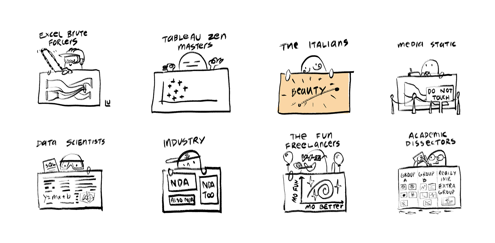
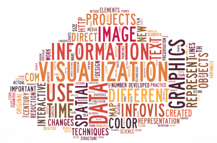

Visualización
Visualizar es hacer visibles y comprensibles al ser humano aspectos y fenómenos de la
realidad que no son accesibles al ojo. No tiene relación directa con el acto de ver, sino con el
transformar datos abstractos, fenoménicos y estadísticos en mensajes visibles que puedan ser conocidos
por las personas (Costa, 1998). Estos mensajes visibles se desarrollan mediante diversas técnicas que
forman parte de un lenguaje visual que está comprendido por esquemas, diagramas o planos, que reciben el
nombre de imágenes funcionales y que tienen como objetivo visualizar información (Pontis, 2007). Tufte
menciona que estas imágenes pueden: [...] visually
display measured quantities by mean of combined use
of points, lines, a coordinate system, numbers, symbols, words, shading and color.
Esta combinación de la que habla Tufte, se puede apoyar con el trabajo realizado por Jacques Bertin,
quien realizó la primera sistematización de variables visuales para cartografía que fue publicada en su
libro Semiologie Graphique, una respetada publicación sobre los fundamentos teóricos para la
visualización de información por medio de diagramas, redes y mapas. Este trabajo determina que las
variables son 7: posición, forma, orientación, color, valor, textura y tamaño (fig. 1) (1967).

Fig. 1. Variables planteadas por Bertin en Semiologie Graphique.
Algunas de estas variables son transversales a todos los procesos del ver-y-entender registrados en la
historia: orientación y posición; a las que se suman identificación y dirección (Roam, 2008, p.53) que
junto con las demás, confeccionan los elementos necesarios para la construcción de sistemas gráficos o
la estética comprendida como cada aspecto de un elemento gráfico dado (Wilke, 2019) (fig. 2).


[Fig 2]
Variables planteadas por Roam en The
back of the napkin (arriba) y Wilke en Fundamentals
of Data Visualization (abajo).
Actualmente, la visualización de datos se percibe como un lenguaje familiar dados los avances
tecnológicos y la constante circulación de imágenes. Estos fenómenos mencionados, sumados al corpus
existente, han hecho que la forma en que se realizan y se despliegan las visualizaciones de datos se
transforme, alejándose por necesidades comunicativas y contextuales de las directrices que nos da Tufte
para lograr la Graphical Excellence, lo que nos lleva a pensar en cómo el contexto técnico y
socio-político determina las formas en las que las imágenes e información se despliegan. Y como la
lectura, imágenes y visualizaciones, no son un fin en sí mismo, sino que un medio para adquirir
conocimiento y experimentar múltiples cosas (Unger, 2012, p.175), por lo tanto estos medios deben
configurarse en función del contexto, usuarios y el mensaje a transmitir.
Antecedentes
A pesar de que la palabra datos se puede asociar rápidamente a los computadores y por lo tanto, las
visualizaciones de datos nos remitan al procesamiento de datasets mediante softwares de los que se
obtienen gráficos, los resultados que vemos hoy son consecuencia del desarrollo de la disciplina misma,
de los avances tecnológicos y también del contexto socio-cultural (Pontis, 2007). El arte egipcio puede
considerarse como el primer ensayo de representación de la realidad, seguido por la cultura griega, que
intenta aproximarse y mejorar el esquema anterior. Otras correcciones importantes se realizaron en el
renacimiento y posteriormente a mediados del siglo XIX, que introdujo una nueva forma de entender el
mundo, al humano y también una nueva visualización de la realidad. Los primeros registros que se conocen
de una visualización de datos corresponden a diagramas geométricos, a tablas de las posiciones de las
estrellas y otros cuerpos celestes; y al armado de mapas para ayudar en la navegación y la
exploración
(2007).
Después de mencionar varias obras gráficas que se realizaron en el pasado, como por ejemplo, mapas,
atlas o construcciones gráficas en general, Pontis concluye que todas ellas responden al concepto de
mimesis1 y que no
responden a códigos preestablecidos. Este ejercicio se facilitó con la
llegada de la
imprenta ya que, mediante piezas reutilizables, facilita la reproducción.
Durante el siglo XVI se crearon técnicas e instrumentos para precisar la observación y la medición de
cantidades físicas, y en el siglo siguiente se crearon instrumentos para lograr mayor exactitud en las
ilustraciones técnicas. Cuando se procesa mediante aparatos tanto la observación como la representación,
se potencia la reproducción. Pero no fue hasta el siglo siguiente cuando se comenzaron a procesar datos
basados en estudios de estadística y probabilidades, además del desarrollo de la geometría analítica,
donde se crearon construcciones gráficas estandarizadas para la representación (2007).
En el siglo XVIII aparecen los primeros gráficos estadísticos: Pontis coincide con Funkhouser en que el
gráfico de Joseph Priestley (1733-1804) fue el primero en aparecer en 1765, sin embargo, para Tufte es
el de William Playfair (1759-1823). Para Iñaki Úcar, investigador de la Universidad Carlos III de
Madrid, el pionero fue Priestley, mientras que la obra de Playfair es considerada la primera obra
importante de trabajo estadístico (fig. 3).


[Fig 3]
arriba A Specimen of a Chart of
Biography, obra de Joseph Priestley. Abajo Exports and imports to and from
Denmark and Norway from 1700 to 1780,
obra de William Playfair publicado en
Commercial and Political Atlas.
El siglo más importante para los gráficos fue sin duda el XIX, donde fueron creados
algunos de los tipos de gráficos más importantes que se conocen hoy en día: gráficos de barras y
circulares (pie chart), histogramas, gráficos de línea, líneas de tiempo, mapas de contornos, gráficos
isotérmicos, cartogramas, mapas de puntos (dot maps) y mapas de transporte (2007). Además de esto, se
realizó el que es considerado por Tufte el mejor gráfico de la historia: Mapa figurativo de las
sucesivas pérdidas de hombres de la Armada Francesa en la campaña de Rusia 1812-1813 por el ingeniero
Charles Minard (fig. 4).

[Fig 4]
Carte figurative des pertes successives
en hommes de l’Armée Française dans la
campagne de Russie 1812-1813 (Mapa
fi gurativo de las sucesivas pérdidas de
hombres de la Armada Francesa en la
campaña de Rusia 1812-1813), gráfico
que elabora Charles Minard en 1869.
Otro hito importante de destacar en este período fue el desarrollo del diagrama de la
rosa por Florence Nightingale, enfermera, escritora y estadística británica considerada la madre de la
enfermería moderna. Este histograma circular (fig. 5) evidenciaba las causas de muerte de soldados de la
armada británica.
También es necesario nombrar el mapa del cólera realizado por el médico John Snow (fig. 5), que ayudó a
comprender cómo se estaba propagando el cólera por las calles de Londres. Mapa que lo consagró como el
padre de la epidemiología moderna.


[Fig 5]
Arriba el Diagram of the causes
of mortality, histograma elaborado por
Florence Nightingale. Abajo, el
Mapa del cólera elaborado por John
Snow.
Al contrario del siglo XIX, el siglo XX es catalogado por Pontis como los oscuros años
modernos de la representación visual esto dado por una producción masiva de gráficos que ponían la
estética por sobre el contenido transformándose en imágenes sugestivas de mucha circulación incapaces de
mostrar datos con precisión (2007). Todo esto como consecuencia de un cambio en la percepción de la vida
luego de la Primera Guerra Mundial.
Hacia el final del siglo XX, con la invención del computador y su masificación, nuevas formas de
visualizar información se hicieron posibles. Como señala Pontis, una de ellas fue la posibilidad de
hacer visualizaciones de información multivariables. Según avanza el desarrollo de dispositivos y
tecnologías de origen informático, las visualizaciones de datos se fueron haciendo más ricas
gráficamente y su desarrollo se ha sistematizado (2007). Esta sistematización se ve reflejada en las
múltiples formas que existen hoy para llevar a cabo visualizaciones de información. Desde programas que
están en la mayoría de computadores como Excel o Powerpoint hasta librerías de código escritas
únicamente para realizar visualizaciones de datos como Semiotic, Victory, Highcharts, Plotly, todas
ellas basadas en D3 (Data-Driven Documents), librería de
Javascript para crear visualizaciones
interactivas que pueden desplegarse en navegadores web.
Sin embargo, un poco antes de llegar a esta sistematización, existe una primera oleada en la que las
visualizaciones de datos se destacaron por su claridad (Meeks, 2018), donde todo el archivo de
visualizaciones creadas sirvieron como materia prima para Tufte, quien, en 1983, publica la primera
edición de su conocido texto The Visual Display of Quantitative Information, en el cual ofrece
principios para lograr visualizaciones de datos eficaces.
Sin embargo, hoy los programas informáticos son una fuente inmensa para la innovación en recursos
gráficos que permiten obtener diversos resultados. La automatización algorítmica ha permitido a los
especialistas centrarse en mejorar la calidad comunicativa y en pensar cuál es la técnica gráfica
apropiada para entregar correctamente el mensaje.
Excelencia gráfica
Para Tufte existen varios principios que hacen que una visualización
de datos sea sobresaliente. En base a una serie de análisis de algunas
de las obras, menciona:
Graphical excellence is the well-designed presentation of interesting data—a matter of substance, of
statistics, and of design. [...] consists of complex ideas communicated with clarity, precision and
efficiency. [...] is that which gives to the viewer the greatest number of ideas
in the shortest time with the least ink in the smallest space. [...]is nearly always multivariate. And
graphical excellence requires telling the truth. [La excelencia gráfica es la presentación bien diseñada
de datos
interesantes—un asuto de fondo, de estadísticas y de diseño. [...] consiste en comunicar ideas complejas
con claridad, precisión y eficiencia. [...] Es lo que le da
al espectador el mayor número de ideas en el menor tiempo posible y con la menor cantidad de tinta en el
menor espacio[...] casi siempre es multivariable. La excelencia
gráfica requiere decir la verdad.] (2007, p.51)
Para llegar a esta excelencia, se proponen una serie de atributos a la que una buena
visualización de datos debería responder: Lie Factor, Data-Ink Ratio, Chartjunk, Data Density, Small
Multiples.
El Lie Factor corresponde a: a value to describe the relation between the size of effect shown in a
graphic and the size of effect shown in the data. Esta relación debe establecerse de manera proporcional
entre lo dibujado y el dato a cuantificar, tanto en dimensiones como en tamaño.
Tufte se refiere a Data-Ink como the non-erasable ink used for the presentation of data. Por lo tanto,
el Data-Ink Ratio es la relación entre la cantidad de datos mostrada y la cantidad de tinta/pixeles
usada para mostrar esa información. Para el autor, si esa relación es mayor a 1, el gráfico contiene
información que se puede desechar. Cuando esta relación es menor a 1 significa que al gráfico
probablemente le falten datos para ser comprendido; si es mayor a uno, es porque sobran elementos en la
construcción. Estos elementos sobrantes es a lo que Tufte denomina como Chart Junk: unnecessary or
confusing visual elements in charts and graphs.
Por último, Data Density y Small Multiples son dos conceptos que hacen referencia a la cantidad de
información desplegada en los gráficos. Data Density es definido como the proportion of the total size
of the graph that is dedicated displaying data. Y Small Multiples como series of the same small graph
repeated in one visual. Para Tufte es muy relevante que se pueda expresar una gran cantidad de datos en
una misma vista y que repitiendo un mismo gráfico como fotogramas, los datos se puedan comparar con
mayor facilidad y nos entreguen una mejor lectura.
En suma, una buena visualización debe entregar los datos de forma en que lo visualizado esté relacionado
proporcionalmente con el dato a cuantificar y donde no existan distractores ni elementos sobrantes
innecesarios que dificulten la lectura del gráfico y que además pueda expresar tantos datos como sea
posible con el objetivo de que sean comparables y analizables.
Diversas disciplinas para la producción de gráficos
En la actualidad, las formas en que se visualiza información han mutado en función de las
tecnologías y los datos disponibles. Esta transformación se ha visto potenciada por las cantidades de
información circulantes y por las diversas maneras de herramientas y formas de despliegue que existen
hoy. Pasamos de disponer de Excel para hacer gráficos en dos dimensiones a librerías y programas como
D3,js, Tableau o ggplot. Estas nuevas herramientas cambian la manera en que conversan los datos y las
formas de hacerlos visibles diversificando también el contexto en el que se aplican las visualizaciones
de datos. Estos nuevos contextos se podrían explicar basándonos en el enfoque profesional de cada una de
las personas que realizan visualizaciones (fig. 6): Personas que trabajan con herramientas
predeterminadas, personas que se aproximan desde la estadística y personas que se aproximan desde lo
visual. Y entre ellos otros profesionales que se aproximan desde la usabilidad o desde la academia
(Meeks, 2017). Complementando, la variación de tipos de visualizaciones de datos pueden explicarse
ubicando en una recta en un extremo a los científicos sin estudios visuales y a los diseñadores sin
estudios científicos:
scientists frequently (though not always!) know how to visualize data without
being grossly
misleading. However, they may not have a well-developed sense of visual aesthetics, and they may
inadvertently make visual choices that detract from their desired message. Designers, on the other hand,
may prepare visualizations that look beautiful but play fast and loose with the data. [Los científicos
con frecuencia (¡aunque no siempre!)
saben como visualizar datos sin caer en engaños. Sin
embargo, es posible que no tengan bien desarrollado
el sentido estético y que, sin darse cuenta, tomen
decisiones visuales que desvirtúen el mensaje. Los
diseñadores, por otro lado, pueden preparar visualizaciones
preciosas pero toman los datos más a la ligera
y con menos rigurosidad.] (Wilke, 2019).

Fig.6. Dibujos de Susie Lu para el artículo The 7 Kinds of Data Visualization
People por
Elijah Meeks. Recuperado de
https://medium.com/nightingale/the-7-kinds-of-data-visualization-people-9964e80443a7
Esta combinación de múltiples disciplinas también es destacada por Ben Fry en su
Visualizing data: Exploring and explaining data with the processing environment, en la que cada una se
diferencia de otra por su aproximación y diversas formas de aportar a la disciplina:
Given the complexity of data, using it to provide a meaningful solution
requires insights from diverse fields: statistics, data mining, graphic design, and information
visualization. However, each field has evolved in isolation from the others [Dada la complejoidad de los
datos,
su uso para proporcionar una solución significativa
requiere conocimientos de diversos campos: estadísticas,
minería de datos, diseño gráfico y visualización de
información. Sin embargo, cada campo ha evolucionado
de forma aislada de los demás.] (2008, p.5).
Desde la academia
Lev Manovich, académico, informático y teórico de nuevos medios, plantea que una
visualización de datos
es una transformación de datos cuantificados no visuales en una representación visual. Minguillón hace
énfasis en lo amplio de la definición de Manovich, ya que este último a pesar de reconocer las
primitivas gráficas que le dieron forma a la visualización desde el siglo XVIII, señala que con las
tecnologías actuales existen modos de visualizar información que escapan a estas formas tradicionales
que provienen del ámbito científico-estadístico y que son consecuencia de la capacidad de manipular
muchas más capas de información mediante programas informáticos. A estas visualizaciones que ponen
énfasis en el significado del dato, como por ejemplo las nubes de palabras (fig. 7) —que podrían
reemplazarse por un gráfico de barras, por ejemplo—, las denomina visualizaciones sin reducción o
visualización directa. Al igual que Meeks, propone que esta diferencia tiene como causa el enfoque
profesional de quien realice la visualización: el uso de los gráficos con un grado alto de abstracción
responden a las ciencias exactas y estadísticas y los demás, a diversas disciplinas como las ciencias
sociales, el diseño o la comunicación.

Fig. 7. Nube de palabras con las palabras más usadas en el artículo de Manovich,
«What is Visualization?». Por Julià Minguillón.
En palabras de Manovich, hay visualizaciones de datos en las cuáles no es necesario
reducir a primitivas gráficas lo que se quiere mostrar, sino que basta con un muestreo de los datos
originales (2016). Esta forma de visualizar información permite que se obtengan conclusiones abiertas
del fenómeno estudiado.
Esta apertura técnica a otras disciplinas ha hecho que los límites de las visualizaciones de datos se
torne difuso. Aunque siempre se debe considerar el contexto en el que se trabaja con ellas. Por ejemplo,
en contextos complejos, son herramientas que
por medio de un lenguaje visual, colaboran en la tarea de facilitar la
comunicación, interpretación y comprensión de datos para avanzar en el conocimiento. La información
conformada por datos de tipo cuantitativo o cualitativo se traduce en visualizaciones con el objetivo de
evidenciar patrones, tendencias y anomalías, constantes o variables que amplían el horizonte de lo
visible. (Chiarella et al., 2016).
Sin embargo, Chiarella, De Monte y Marengo, hacen un alcance que nos podría sugerir, en
la línea de
Pontis vista al inicio, como las condiciones tecnológicas subordinan las nuevas visualizaciones de
datos. Si bien, coinciden en que las visualizaciones científicas siguen trabajando con las variables
gráficas de las que habla Bertin gracias al desarrollo de herramientas de programación que tienen la
capacidad de sistematizarlas, existe otra corriente denominada infoaesthetic, que busca explorar nuevas
formas de graficar información que permita a los usuarios lecturas interpretativas y reflexión sobre los
datos (p. 40). Esto nos habla de cómo graficar información ha pasado de ser una disciplina funcional a
una que propone la reflexión y múltiples interpretaciones sobre temas en concreto tomando como materia
prima los datos.
Funciones complejas, gráficos complejos
Estos nuevos modos de desplegar información se pueden sustentar con la “reducción
controlada” que propone John Maeda, fundador del Grupo de Computación y Estética del MIT, quien, en su libro The laws of Simplicity plantea
que para obtener simplicidad es muy importante reducir evaluando constantemente la complejidad del
mensaje que se quiere entregar y las capas de significados que se le quiera añadir al
objeto/imagen/mensaje (2008). En este sentido, Ben Fry en Visualizing Data: Exploring and Explaining Data with Processing Enviroment, añade the most important part of understanding data is
identifying the question that you want to answer, lo que deriva en que mientras más claros sean los
objetivos y las preguntas, más claro será el resultado visual esperado (Fry, 2008). Esta necesidad de
complejizar el mensaje, hace que se tome distancia de lo postulado por Tufte, ya que capas de
información que no responden al contenido, sino que agregan otro significado a la imagen, podría ser
considerado como Chartjunk y/o elevar el valor del Data-Ink Ratio. Esta condición podría considerarse
propia de las necesidades comunicativas actuales, donde entregar el mensaje sin un emoji que lo dote de
contexto, podría derivar en un entendimiento parcial de lo comunicado.
Esta condición responde a que sencillamente hay objetos, imágenes o mensajes que no pueden ser
reducidos. Donald Norman, en su libro Living with Complexity lo plantea de la siguiente manera:
When complexity is unavoidable, when it mirrors the complexity of the world or
of the tasks that are being done, then it is excusable, understandable, and learnable. But when things
are complicated, when the complexity is the result of poor design with completely arbitrary steps, with
no apparent reason, then the result is perplexing, confusing, and frustrating. [Cuando la
complejidad es inevitable, cuando refleja la complejidad
del mundo o de las tareas que se están realizando,
entonces es excusable, compresible y aprendible. Pero
cuando las cosas se complican, cuando la complejidad
es resultado de un diseño deficiente con pasos
completamente arbitrarios, sin razón aparente, el resultado
es desconcertante, confuso y frustrante.] (2011).
Coincidiendo con lo que se dijo anteriormente, la complejidad debe estar balanceada y medida en función
de los objetivos de lo que se quiere comunicar. De este modo, lo-diseñado responderá a necesidades y no
será arbitrario, por lo que el resultado debería garantizar un objeto usable y entendible. Sin embargo,
cuando el resultado no está hecho en función de objetivos claros, y a causa de no estar realizado por
los expertos nombrados en párrafos de más arriba, nos alejamos de cualquier justificación visual y por
lo tanto, el resultado se torna confuso y frustrante.
Con la expansión de la computación y la creación de programas que permiten manejar datos e información a
cualquier persona con acceso a ellos, es que la producción desmesurada de gráficos que intentan
desplegar datos de forma llamativa sin importar el contexto, nos está llevando, al igual que en el siglo
pasado, a otra época oscura en la disciplina. Esta oscuridad se pone de manifiesto en primer lugar
cuando personas no profesionales de la visualización de datos se dedican a crear gráficos sin objetivos
claros, cayendo en algunos de los problemas que se mencionaron anteriormente. También cuando se entregan
herramientas que “facilitan” la creación de estos gráficos y se pone por delante el darle formato a la
información más que desplegarla de manera clara. El más claro ejemplo de esto: PowerPoint, programa para
crear presentaciones desarrollado por Microsoft.
A pesar de ser un programa hecho para disponer información, tiene ciertas funciones que permiten
realizar distintos tipos de gráficos. Uno de los muchos problemas del despliegue tanto de información
como de gráficos en este medio es el formato. Este se comienza a utilizar como herramienta válida en
colegios y se mantiene en ambientes profesionales y laborales, y se trabaja sobre ellos con algunas
reglas determinadas, como por ejemplo la cantidad de texto por página, el uso de colores, animaciones y
todo lo necesario para hacer más “amigable” el contenido, dejándolo de lado. Además, se suelen utilizar
gráficos predeterminados con elementos visuales innecesarios — como perspectiva — que se disponen cada
uno de ellos a página completa hacen que los datos mostrados sean imposibles de comparar, analizar y
relacionar (Tufte, 2009).
Esta forma de presentar datos e información responde a una trivialización del contenido que está mediada
por un programa que ofrece herramientas que no son bien utilizadas. Esta mal uso, responde a un contexto
donde se pone por delante la forma en que se presenta una idea más que la idea en sí misma.
Tener a la mano tantas herramientas que permiten hacer visible información, la cantidad de información
circulante y el contexto político en el que la competencia hace que lo más llamativo genere ganancias,
ha hecho que la aceptación de lo efímero, de la fragmentación, la discontinuidad y lo caótico (Gómez y
Rico, 2011, p.157) rijan el cómo interactuamos con lo diseñado y que lo diseñado se rija por esos nuevos
parámetros también, cayendo en un círculo vicioso. Imágenes que no cuentan historias, que no están
enfocadas en los datos y que no son atractivas visualmente son consecuencia de que nuestras sociedades
urbanas se erigen cada vez más sobre una rápida entrega de datos etiquetados como importantes (p.158).
Este caos, se ve representado justo en la entrega rápida de datos regido por la necesidad de tener la
primicia, donde la información pasa a segundo plano y su forma tiene que ser llamativa e impactante para
ganar en clicks y visitas. Sobre este fenómeno y su trascendencia se hablará más adelante cuando veamos
el ejemplo de Interferencia y la definición de dataísmo.
Conclusiones
Existen variables gráficas que podemos considerar un punto de partida para la
visualización de datos o
información, que, por necesidades contextuales, ya sean socio-políticas o técnicas, pueden
flexibilizarse según lo que se necesite decir.
Cualquiera sea la forma de aproximarse a la visualización de datos, es necesario que su desarrollo sea
siempre en función de su lectura, entendiendo que existe un contexto que le puede dar forma a las
imágenes o visualizaciones, asegurándose de que su comprensión y legibilidad sea total. Para ello, hay
que poner énfasis en el contenido y el usuario, entendiendo cuál es su capacidad para leer la
información entregada.
La excelencia gráfica de la que hablaba Tufte ha quedado como un buen precedente para entender cómo se
hicieron las visualizaciones datos en el pasado y cómo hacer visualizaciones de datos precisas y con un
tono científico. Sin embargo, para la cantidad de información actual y los nuevos modos que surgen desde
lo visual, lo periodístico o las exploraciones de Manovich, por ejemplo, es un modelo que reduce en
muchos niveles la carga simbólica de las visualizaciones, lo que podría llevar a la comprensión parcial
del mensaje.
Por último hay que tener claro que estas capas de nuevos significados que se les pueden añadir a las
visualizaciones deben ser medidas y pensadas para no caer en excesos injustificados como los que nacen
de un gráfico de tarta en 3D con colores amarillos, verdes y azules hipersaturados.
Referencias
-
Chiarella, M., De Monte, A. & Marengo, A. (2016). Intersticios en
el aprendizaje de la arquitectura: La visualización de datos como instrumento en el proceso
proyectual.
-
Costa, J. (1998). La esquemática: visualizar la
información. Barcelona: Paidós.
-
Fry, B. (2008). Visualizing data: Exploring and explaining data
with the processing environment. Gedisa Editorial.
-
Gómez, M. & Rico E. (2011). Estudios críticos sobre diseño de
información. Buenos Aires: Editorial de la Facultad de Filosofía y Letras.
-
Maeda, J. (2008). Las leyes de la simplicidad: diseño, tecnología,
negocios, vida. Gedisa Editorial.
-
Manovich, L. (2010). What is visualization?. Extraído de:
http://manovich.net/content/04-projects/064-what-is-visualization/61_article_2010.pdf
-
Meeks, E. (2017). Data Visualization, Fast and Slow.
Medium.
https://medium.com/nightingale/data-visualization-fast-and-slow-d2653d4850b0
-
Meeks, E. (2018). The 7 kinds of Data Visualization People.
Medium.
https://medium.com/nightingale/the-7-kinds-of-data-visualization-people-9964e80443a7
-
Minguillon, J. (2016). Introducción a la visualización de
datos. Universidad Oberta de Catalunya. Extraído de:
http://openaccess.uoc.edu/introduccion-a-la-visualiazacion
-
Norman, D. (2010). Living with complexity. MIT press.
-
Pontis, S. (2007). La historia de la esquemática en la
visualización de datos. Recuperado de:
https://sheilapontis.files.wordpress.com/2010/02/spanish.pdf
-
Roam, D. (2008). The back of the napkin: Solving problems and
selling ideas with pictures.
-
Tufte, E. R. (2001). The visual display of quantitative
information. Cheshire, Connecticut: Graphics Press.
-
Unger, G. (2012). ¿Qué ocurre mientras lees? Tipografía y
legibilidad. Valencia: Campgràfic Editors.
-
Wilke, C. (2019). Fundamentals of data visualization: a primer on
making informative and compelling figures. O'Reilly Media.